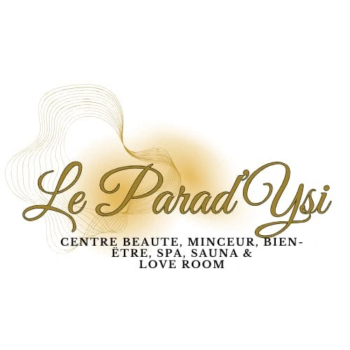

INSTITUT & ESPACE PRIVATISÉ · PEYRUIS
Le temps
de prendre
soin de vous.
Beauté, minceur et bien-être avec Ysidia.
Un lieu à part, où chaque rendez-vous
devient
votre parenthèse.
Seul·e ou à deux. Toujours sur rendez-vous.
LAISSEZ LE QUOTIDIEN À LA PORTEVotre instant.
 Le plaisir de
Le plaisir deralentir.
À CHAQUE ENVIE, SON INSTANT
Un côté beauté.
Un côté détente.
Des soins ciblés, un massage, la chaleur du sauna ou le calme du spa : choisissez ce dont vous avez envie, Ysidia vous accompagne pour la suite.
LE CORPS, LE VISAGE, VOTRE ENVIE
La beauté se vit
au plus près de vous.
Le lipolaser, l’EMS, les soins ciblés du corps et l’épilation font partie de l’univers beauté du Parad’Ysi. Derrière chaque prestation, un temps d’échange pour comprendre votre demande et préparer votre rendez-vous.
Découvrez les soins en images, les différentes prestations et les possibilités de séance avec Ysidia.
Explorer beauté & minceurLA PARENTHÈSE SIGNATURE D’YSIDIA
Un soin du visage.
Un massage du dos.
Une heure à vous.
Pourquoi choisir ? Cette spécialité du Parad’Ysi réunit un soin du visage et un massage du dos dans un même rendez-vous. Le plaisir de prendre soin de sa peau, puis de laisser la place à la détente.
Découvrir ce rendez-vousBIENVENUE AU PARAD’YSI
Une attention simple.
Un moment à part.
À Peyruis, Ysidia vous accueille au Parad’Ysi pour vos rendez-vous beauté, minceur et bien-être. Ici, les soins et les moments de détente se choisissent ensemble, selon votre envie.
Vous venez pour une prestation précise, un instant de calme ou une expérience à partager à deux ? Prenez contact pour imaginer votre rendez-vous.
Rencontrer votre prochaine parenthèse

L’UNIVERS MINCEUR, EN PHOTOS
Voir les soins.
Mieux les découvrir.
Lipolaser et soins cellulite : retrouvez les photos transmises par l’institut, avec leurs légendes.
Parcourir les photos des soinsLE BON MOMENT, AU BON ENDROIT
On se retrouve
à Peyruis ?
2 avenue de la Sève · Le Mardaric
04310 Peyruis
Les rendez-vous et les formules se préparent directement avec Ysidia.
Contact & accèsAVANT VOTRE PREMIÈRE VISITE
Comment choisir mon soin ?
Parlez de votre envie à Ysidia. Elle vous présente les prestations et leurs modalités avant de fixer votre rendez-vous.
Peut-on venir à deux ?
Oui, les massages en duo et l’espace spa/sauna font partie des possibilités. Les formules et disponibilités sont à préciser au moment de votre demande.
Où trouver les tarifs ?
Les tarifs dépendent du soin, de sa durée et de la formule choisie. Demandez le détail et le montant à Ysidia avant de confirmer votre rendez-vous.
AU RYTHME DE VOS ENVIES
Votre prochain moment
commence ici.
Une envie précise ou simplement besoin de souffler ? Ysidia vous aide à choisir votre parenthèse.
UNE ATTENTION QUI PREND SON TEMPS
Offrir plus
qu’un cadeau.
Un massage, un soin ou une parenthèse au spa : préparez votre bon cadeau avec Ysidia et choisissez les possibilités qui correspondent à votre attention.
Préparer mon bon cadeau